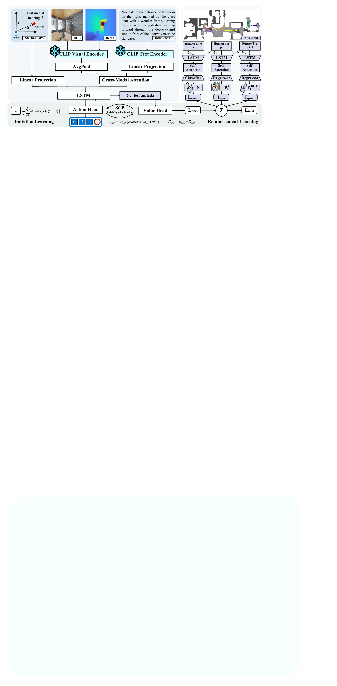

ANONYMOUS SUBMISSION · DOUBLE-BLIND REVIEW
DPed-VLN: A Benchmark for Socially Compliant Vision-and-Language Navigation in Dynamic Pedestrian Environments
Abstract
Vision-and-language navigation in human-populated spaces requires agents to ground language while responding to moving pedestrians and social-safety constraints. We present DPed-VLN, a Habitat 3.0 benchmark containing 33,093 navigation episodes with paired global and prior-augmented instructions. The benchmark combines ORCA-controlled humanoid pedestrians, socially constrained expert paths, and navigation-efficiency and pedestrian-safety metrics reported side by side. Global instructions provide ordinary route guidance, while prior-augmented instructions include dynamic-pedestrian cues for the same episodes. These conditions support comparisons of policy responses to the available language annotations. We provide DPet (Dynamic Pedestrian-aware Network) as a reference implementation trained with reinforcement learning or imitation learning. We also evaluate representative vision-and-language navigation policies under zero-shot and parameter-efficient adaptation settings.
Benchmark at a glance

Two language conditions
Global instructions
Route and destination guidance grounded in the static scene, without pedestrian-specific priors.
Prior-augmented instructions
The same route guidance enriched with concise cues about pedestrian motion, risk, and crowd context.
Reference policy
DPet grounds egocentric RGB-D observations, language, start-relative progress, and pedestrian-aware auxiliary objectives in a unified policy.

Results and qualitative evidence

Progress and safety together
We report success, path efficiency, completion time, collision behavior, and personal-space compliance side by side to expose the trade-offs hidden by goal-reaching metrics alone.